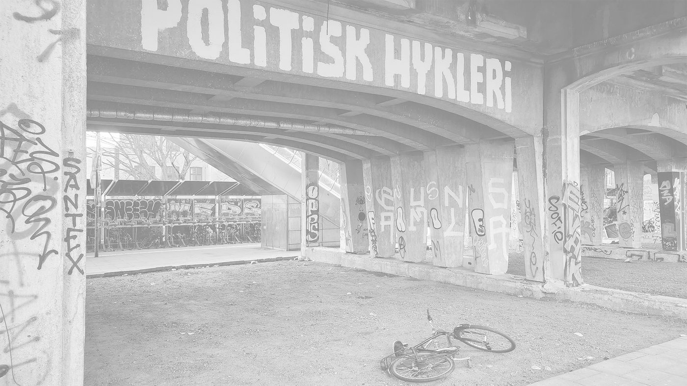

Digter og filosof. Emil Salzer skriver om kultur, identitet og det at være menneske i en tid, hvor meningerne er højere end eftertanken. Han holder foredrag, udkommer med digtsamlinger og fylder debatterne med poesi.

Emil Salzer begyndte at skrive i 2020 efter at være brudt ud af et alkoholmisbrug, der stod på, siden han var ni år gammel. I podcasten Pilestæde beretter han om en opvækst i Jennemparken, Randers, præget af bosniske og albanske krigsflygtning, hård MENAPT-indvandring og Hells Angels rockerborg.
“Og bliver nødt til at kigge på, hvad sandheden er i dig og i verden omkring dig.”
— Salzer til Berlingske
Presse, TV, debat og øvrige henvendelser
Kontakt Emil